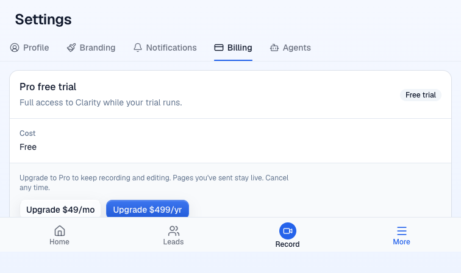
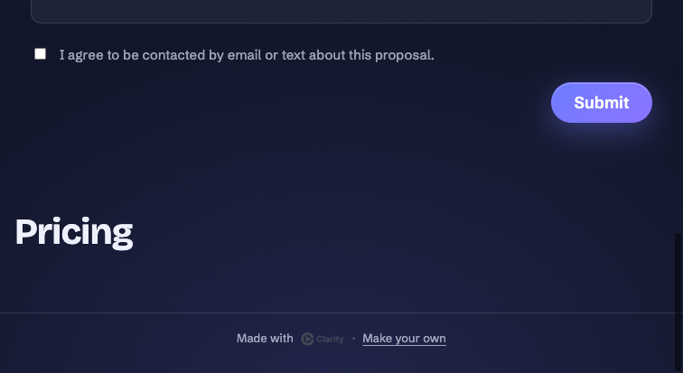

BLOCKED. Runtime checks passed where previews permit them. Server analytics evidence remains unavailable.
Intercepted editor payloads · Badge request and stats · Proof text
The real preview screen while the plan API returned Free. Synthetic analytics configuration, with all vendor traffic intercepted.

Mock page footer. Only Make your own was clicked. The form was not submitted.

## Proof
**Verdict:** BLOCKED. The checks below passed, but required server analytics evidence is unavailable on this preview. This is an environment limitation in the brief, not a demonstrated defect in the PR. Proof remains incomplete.
**Head:** `2d3d1dec172a13061210270ac800c46483fd8325`
**Issue:** #1439
**Routing:** auto
**PR:** https://github.com/Clarity-Video-HQ/clarity/pull/1602
**Preview:** https://pr-1602.clarity-video.workers.dev
**Evidence:** https://willayam.github.io/clarity-design-previews/proof-1602/
**Waved through:** none
William has not approved landing. Nothing was merged or pushed to this branch. No production or staging writes were made.
### Preview identity and migration
The preview returned this deployment identity, and `control-clarity doctor --pr 1602 --wait` passed with an authenticated mock account.
```json
{"headSha":"2d3d1dec172a13061210270ac800c46483fd8325","baseSha":"66af49adf5da8ca3704ea733b6277b4aa3966766"}
```
Read-only SQL against `clarity-pr-1602-auth` returned migration `0059_free_plan_analytics.sql` and the `account_plan_analytics` table with its primary key on `environment, owner_id`. The table had zero markers. The schema is applied. An observation row is not present because preview requests skip the observation function's writes.
### Plan on the session and focus refresh
The real preview returns `{"enabled":false}` from `/api/analytics/config`. It cannot initialize PostHog without a browser-only configuration override. I supplied a synthetic token with environment `local` through Playwright request interception and intercepted every PostHog request. No event reached PostHog. The deployed editor bundle and plan endpoint were unchanged. The browser used the repository analytics verifier's ordinary Chrome user agent and webdriver override, since the SDK excludes the default headless browser.
The SDK's persisted properties contained `plan: free`, `environment: local` and the verified release. After restoring the mock account's grant in this preview's database, a window focus event increased observed `plan_get` requests from 4 to 5 and changed the SDK property to `plan: pro` without a reload. With consent declined, a reload and focus produced no additional capture batch, with the intercepted batch count staying at 1. The existing consent tests passed too.
This proves registration and refresh under synthetic browser configuration. It does not prove vendor ingestion or native preview analytics availability.
### Move to Free and its reason
I expired only the seeded mock Pro account's complimentary grant. Two real `plan_get` requests returned HTTP 200 with the following answer.
```json
{"plan":"free","lapse":"access_ended","trialEndsAt":null,"pastDue":false,"livePages":{"count":3,"limit":3}}
```
The runbook maps this lapse to analytics reason `other`. A preview database read after both requests returned `[]` for this owner's observation marker and `[]` for its `account_moved_to_free` and `live_page_limit_hit` outbox rows. The code deliberately returns before both marker and outbox writes when `POSTHOG_ENVIRONMENT` is absent. The preview config checker confirmed no PostHog configuration.
The migrated SQLite tests passed for all three Free reasons, duplicate reads, a marker surviving outbox deletion, later lapses and preview exclusion. Runtime marker creation, deduplication and outbox delivery cannot be proven on the requested preview. No environment flag or server deployment was changed to bypass that gate.
### Refused publish and refused video share
I duplicated the preview's seeded mock page three times and published two copies. Together with the original page, the account had three live pages. Publishing the third copy and sharing a seeded mock video each returned HTTP 409.
```json
{"publish":{"status":409,"code":"live_page_limit","livePages":{"count":3,"limit":3}},"videoShare":{"status":409,"code":"live_page_limit","livePages":{"count":3,"limit":3}}}
```
Both refusals worked on the deployed head. Their outbox query returned `[]`, for the preview exclusion described above. The local migrated SQLite test for each final refusal and delivery passed. The required preview refusal rows remain unavailable.
### Upgrade button surface
Clicking the monthly Upgrade button produced this event in the intercepted PostHog batch.
```json
{"event":"upgrade_to_pro_clicked","properties":{"plan":"free","surface":"subscription","route":"/settings/billing","environment":"local","release":"2d3d1dec172a13061210270ac800c46483fd8325"}}
```
The adjacent generic click event used `control: subscription_upgrade_to_pro`. Checkout was intercepted with a synthetic 503 before any billing action. This proves the deployed button's analytics payload under the synthetic configuration. The usage meter and limit dialog callers belong to #1600 and were not requested here. Their helper tests passed.
### Public badge and customer CTA statistics
On the temporary mock page, clicking Make your own emitted the following real request through the public-page script. Navigation was prevented after the click so the verification stayed on the preview. No form was submitted and no lead was sent.
```text
POST https://pr-1602.clarity-video.workers.dev/api/pages/events
HTTP 202
```
```json
{"events":[{"page_id":"2eaedbd8-0077-47fd-ae6d-dd380b757eac","route_key":"7pxde7","renderer_version":"public-page-v1","event_type":"public_badge_clicked","referrer":null,"utm_source":null,"utm_medium":null,"utm_campaign":null}]}
```
The complete captured request also had random browser session and viewer IDs. Those are first-party emitter fields, not exported PostHog properties. `pages_stats` returned HTTP 200 before and after. Visits changed from 0 to 1, customer CTA clicks stayed 0, and `buttons` stayed `{}`. A direct stats database read found only the page-view row and no badge outbox row. The local badge-ingestion test passed for the fixed exported properties and exclusion from customer CTA storage.
### Payload privacy
I inspected the captured editor batch and public emitter requests. Neither contained a customer title, name or email. The editor events carried fixed plan, route, control and surface values, SDK metadata and opaque IDs. The badge request carried the fields shown above and random browser IDs. No event used the mock page title or Upgrade button text. The captured stats response contains mock page display fields, but it is not an analytics payload. Server analytics payload privacy is covered by the passing tests, not a preview outbox capture.
### Events documentation
`docs/runbooks/product-analytics.md` at the verified head lists the plan property and all five Free-plan events. It gives the properties, callers, reason mapping, consent behavior, deduplication behavior and preview exclusion. It explicitly identifies the dialog and meter helpers that still await callers. This acceptance criterion is satisfied.
### Tests
Ran `pnpm install --frozen-lockfile --prefer-offline`, then the root `pnpm test` on Node 22.23.1 in a fresh detached worktree. The command exited 0. Its summary lines were as follows.
```text
workers/frontend-router test: Test Files 23 passed (23)
workers/frontend-router test: Tests 293 passed (293)
workers/workspace-tree test: Test Files 49 passed (49)
workers/workspace-tree test: Tests 746 passed (746)
editor test: Test Files 406 passed (406)
editor test: Tests 4823 passed (4823)
# tests 75893
# pass 75892
# fail 0
# cancelled 0
# skipped 1
```
These are the separate runner summaries, not one combined test count. The root command includes the changed plan, subscription-button, page-event and public-badge tests. No red-to-green run is required for this enhancement.
### Writes and cleanup
All writes were confined to PR 1602's mock account and databases.
- Updated grant `grant:e2e-accounts:acct_workos_user_01M3PV8N4H36ZZPHGXFXWCQPM3` three times to end at `2026-10-01T00:00:00.000Z`, once for each browser attempt. Restored it three times to its original `2030-01-01T00:00:00.000Z`, including the final cleanup. No other grant field changed.
- Created mock pages `2eaedbd8-0077-47fd-ae6d-dd380b757eac`, `8a8715aa-49ed-48ef-a19e-ab9b3ed3383c` and `1a32944b-1ef6-4b27-a5f2-e2057fc9772b` through `pages_duplicate`. Published the first two through `pages_publish`. Deleted all three through `pages_delete`, each returning HTTP 200. The application's normal deleted-page records remain.
- Attempted one refused publish and one refused video share at the limit. Neither activated another page.
- Loading the temporary public page wrote its mock page-view telemetry. Clicking the badge sent its event to the preview, which intentionally omitted the outbox insert. Deleted `page_event` rows for this temporary page after reading the evidence. Ordinary preview request and authentication telemetry may remain.
- Final `plan_get` returned Pro, the original grant end, and one live page. No production, staging or PR 1590 database was changed. No lead or checkout was sent.
### Notes and remaining evidence
The original #1439 criterion requires events in PostHog on staging. Staging runs main, and this verifier cannot write to it. The brief's proposed substitute also cannot yield server rows because preview exclusion covers persistence as well as vendor delivery. The coordinator needs an approved environment where this head can create analytics records, or a revised evidence requirement. This item was not waved through.
The Billing screen called the mock account Pro free trial while `plan_get` reported Free after its complimentary grant expired. This is outside the requested analytics scope. It was not compared against PR 1590, so it is an unclassified follow-up observation, not a PR failure.